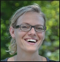
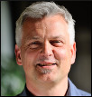

About JCP
Get Involved
Community Resources
Community News
FAQ
Contact Us
About JCP
Get Involved
Community Resources
Community News
FAQ
Contact Us

|
|
Java Community Process: Executive Committee Elections Nominees for 2015

|
The 2015 Fall Executive Committee Elections have started. This year, as defined in the JCP 2.9 Process Document, 8 Ratified and 3 Elected seats are open for re-election. Since we are moving to JCP 2.10, all those who win Elected seats will serve a one-year term.
We hosted a Public EC meeting and Meet the JCP EC Candidates meeting at JavaOne San Francisco as part of Java User
Group Sunday on 25 October.
We also hosted a Meet the JCP Executive Committee Candidates conference call on Friday, 6 November at 10 AM PST.
Please view the 2015 Executive Committee Voting and Participation record for reference.
Please refer to the Java Community Process EC Elections page for more information on the Executive Committee Elections.
Please refer to the Executive Committee Information page for more information on the current Executive Committee.
What follows are the qualification statements provided by the candidates for the Executive Committee, along with a brief biography of the person who would serve as the Member's representative on the Executive Committee if elected, and a position statement when one was provided.
| 2015 EXECUTIVE COMMITTEE RATIFIED ELECTION SEAT CANDIDATES |
Credit Suisse
|
Credit Suisse is a global bank headquartered in Zurich, serving clients in private banking, wealth management,
and investment banking. The bank has 530 offices and 22 booking centers located in over 50 countries. From the
46000 employees, around 10000 IT specialists work in application and infrastructure IT departments, in roles
ranging from architecture, development, and operations.
In 2010, Credit Suisse was elected in the JCP Executive Committee to be the first member to represent the
customers of Java technology. Customers want strong and open standards to secure their investments and to choose
among a variety of different products.
During out three terms in the JCP Executive Committee, we showed a good record of participation in the EC Meetings
and reviewed the JSRs as part of the technology government service. Having a long tradition in the development of
Java EE specifications, we managed to increase our participation in both Java SE and EE Expert Groups as well as
Specification Leads.
We would like to continue our work on the following topics.
Bring in our customer view and argue for strong, open and stable standards that can be implemented by any vendor
or Open Source community for a competitive market, transparent license models, and easy JCP participation.
Focus on technology governance and bring in our expertise in standardization and architecture governance. We
complement this "process-oriented view" with our customer view and rather technical background and thus will
continue to argue for a technical focus in the JCP EC.
Continue our strong and active participation in Expert Groups and as Spec Leads, e.g., for the development,
management, and operations of enterprise-scale applications in the cloud.
Credit Suisse Position Statement (.pdf file)
|

Susanne Cech
|
Susanne Cech is member of Technology Services Architecture & Strategy of Credit Suisse and is the lead architect
for all Application Platforms, including the Java Application Platform (JAP) and Java related technologies.
Her main focus is the identification and standardization of new technologies that aid the development and operations
of large-scale applications. Susanne was the alternate in 2010 and has been the primary representative for the
last 4.5 years. Prior to joining Credit Suisse, Susanne obtained a PhD in Computer Science from ETH Zurich where
she implemented a dynamic updating system for Java programs.
|
| | |
Ericsson
|
Java is a mature technology with high importance for Ericsson. To stay relevant, Java must continue to evolve based on a
broad developer community and a large base of different Java technology manufacturers.
Ericsson has participated in over 40 JSRs, and has been the spec lead for several (e.g. JSR-281, JSR-319) and uses
Java in many areas such as embedded Java ME, embedded Java SE, web profile Java EE + SIP for telecom nodes and full
Java EE for management systems (BSS) and IPTV. Ericsson has participated in over 40 JSRs, and has been the spec lead
for several (e.g. JSR-281, JSR-319). Ericsson uses Java in many areas such as embedded Java ME, embedded Java SE, web
profile Java EE + SIP for telecom nodes and full Java EE for management systems (BSS) and IPTV. Ericsson is a Swedish
technology company and is the world's largest provider of wireless network solutions for telecommunication and IP networking
with an extensive services operation. Ericsson puts heavy focus on innovation with over 20000 employees in the
R&D organizations.
|

Christer Boberg
|
Christer Boberg lives in Stockholm, Sweden and works as a Director at the central CTO office where he drive technology
strategies related to industry areas such as communication services and IOT.
After a decade of programming C++/OO, he switched to Java in the mid-90s and has continued promoting Java as a technology
base since then. Christer also started the Ericsson Java Application Server work that later spun-off into the Sailfin
cooperation with Sun. Since then, he has been working actively to promote and build Java solutions for Ericsson that
meet the requirements of a carrier grade telecom solution.
Somehow, Christer finds time to play in his rock band named Soulpatrol.
|
| | |
Fujitsu
|
Fujitsu has a long history of implementing Java technologies, going back to 1996. Fujitsu has implemented Java
across what is probably the broadest range of platforms in the industry --- from Main Frames Java to Java-Enabled
Telephones. In Japan and around the world, Fujitsu is marketing its Java EE certified Interstage Application Server.
Fujitsu is a very active player in the Java community. Fujitsu has been a member of the JCP/Executive Committee since
its inception. Throughout the years, Fujitsu has an outstanding record of JCP/EC meeting attendance and JSR balloting.
At JavaOne in 2011, Mike DeNicola from Fujitsu was recognized as the "JCP Member of the Year". Fujitsu has participated
in most of the JCP/EC Press Events and JCP/EC Panels discussing the JCP and the role of the Executive Committee that have
been held at JavaOne and in the US and Europe over the past several years.
Fujitsu has participated in and/or supported over fifty JSRs, including being Spec Lead and members of Expert Groups.
Among these are revisions to the JCP Process (JCP 2.9, JCP 2.8, JCP 2.7, JCP 2.6, and JCP 2.5) and merger of the JCP Executive
Committees (JSR355). Fujitsu was active in the Expert Groups creating and now updating JSPA 2, creating Java EE 7 and other key
SE and EE umbrella JSRs. It has also participated in updating SIP Servlet Versions 1.1 and 2.0, plus various XML, Web Services,
EJB, and JAIN JSRs.
Additionally, Fujitsu has strongly supported EJB application development and testing. It was a key member of DOPG
(Distributed Object Promotion Group) in Japan which closed in 2011. Among other things, the group verified interoperability
among member companies ORB products. It was the first group in the world to conduct EJB Interoperability Tests. Fujitsu is also
a founding member of the Component Consortium for EJB and Fujitsu created a membership-based Component Center. Using the
Fujitsu Interstage Application Server as the component runtime infrastructure, Fujitsu facilitates efficient application
development by providing support services and assembling the newest set of EJB business components and standard EJB patterns.
An application developer then adds Domain-specific and User-specific components.
Fujitsu Position Statement (.pdf file)
|

Kenji Kazumura
|
Kenji Kazumura has been working with Java for about 20 years since Java was born, and now he is Senior Professional
Engineer of Java Technology at Fujitsu Limited in Japan. He is in charge of developing Java Virtual Machine for
Interstage Application Server and various Fujitsu middleware products.
He has participated in the Expert Group of JSR 204 (Unicode Supplementary Character Support). He has optimized
several huge enterprise Java applications, specifically in the field of mobile communication and financial service,
in order to run with high performance and reliability. These systems contribute a great deal to the social
infrastructures in Japan.
He is now working to make the cloud environment be more useful by accelerating Java technology into this area.
|
| | |
Hewlett-Packard
|
HP supplies Java technology across virtually all of our computing product lines, ranging from our high-end Integrity
servers to our blade product families. We have been active on the EC since its inception in 2000. HP looks forward to
working with the Java community as an EC member and we appreciate your support in this election.
|

Naresh Shah
|
Naresh Shah joined Hewlett Packard in 2011 as Vice President & Site Leader for the Enterprise Group R&D organization
in India. Before HP, Naresh worked for 4 years at Novell and 20 years at AT&T and its spin-off Lucent Technologies
in the US. Naresh holds a B.Tech. in Computer Science and Engineering from IIT, Kharagpur and M.S. in Computer and
Information Science from the Ohio State University, Columbus.
|
| | |
IBM
|
|
Steve Wallin
|
|
| | |
Intel
|
I represent Intel via the openjdk as a source development contributor. I am a member of an Intel team developers
who produce optimizations and features to enable java performance on Intel architectures. I work within DCST/SSG
for Intel representing my group via voting on JSR issues as they arise and attending working groups and various
conferences such as JavaOne and the JVMLS.
Intel Position Statement (.pdf file)
|
Michael Berg
|
Michael Berg has worked at Intel Corp. for more than 8 years in the SSG. He is currently Sr. Staff S/W compiler
developer and is active in the Java eco-system by contributing JIT compiler development focused on benchmarks
performance as well as customer applications by enabling/designing optimizations. His past experience is in various
compiler development roles on many microarchitectures and operating systems over 25 years for languages like C, C++,
Fortran, Java, OpenCL, DirectX and others.
|
| | |
Red Hat
|
Red Hat/JBoss have been involved with Java standardisation for a decade, trying to represent the best values of open
source development, communities and innovation. We bring a wealth of experience with growing vibrant open source communities
and feeding that into other standards efforts, such as OASIS and W3C and vice versa. In recent years Red Hat has worked
actively on JSR 348, 355, 358 and 364 to improve and streamline the JCP processes, executive committees and approach to
openness.
Red Hat Position Statement (.pdf file)
|
Mark Little
|
Mark Little leads jboss technical direction and research/development. Prior to this he was SOA Technical Development Manager
and Director of Standards. Mark has worked on a number of standards for Web Services, JCP, Cloud and others, as well as
representing Red Hat in bodies such as W3C, OASIS and OMG. He has worked in the area of reliable distributed systems since
the mid-80's and has a PhD on Fault Tolerance, Transactions and Replication. He is also a professor at Newcastle University.
|
| | |
Sociedade de Usuários da Tecnologia Java - SouJava
|
SouJava (the "Java Users Society") is an established non-profit organization and Java User Group focused on strengthening
the Brazilian Java developer community. Founded in 1998 and based in São Paulo, SouJava congregates over 40 thousand
members throughout the country. SouJava was the first JUG to join the JCP and has been active in the Process for
almost a decade. During this time, the group had an important role on the open source of Java, to the point that
Dr. Dobbs Magazine considered at the time Brazil as the reason for the release of OpenJDK. For the last two years,
SouJava has used its role in the JCP EC to improve the participation of JUGs, individuals and small companies into
shaping the future of Java by participating strongly on the Adopt-a-JSR program, with 80+ of the groups members involved
in promoting and adopting JSRs and also leading the discussions that propose to increase membership and participation
from individuals and non-profits into the JCP.
SouJava considers the JCP a fundamental part of the Java ecosystem. The long-term success of Java depends on a process
that encourages vendors, developers and users to contribute and innovate, and that gives everyone the necessary rights
to implement the results. SouJava is committed to ensuring that the JCP is balanced and transparent, and that there
is an equal standing among JCP members. As an active participant in open-source efforts, the group intends to help
ensure that FOSS projects and implementations of Java standards are able to both bring contributions, and also to
share process results. As a leading member of the worldwide Java Users Group Community, SouJava is committed to defend
and promote JUG participation at the JCP.
For the last two years, as member of the JCP EC, SouJava has strived to bring its passion for community, JUGs, open source, standards, and Java to the JCP, and thus foster transparency and participation. After two years of strong involvement, we look forward to increase even more our relationship with the Java community, and we appreciate your support so we can continue to work towards a better JCP.
SouJava Position Statement (.pdf file)
|
Bruno Souza
|
Bruno Souza is a Java Developer and Open Source Evangelist. As founder and coordinator of SouJava (Sociedade de Usuários
da Tecnologia Java; Java Technology Users Society) and leader of the Worldwide Java User Groups Community at Java.net,
Bruno helped in the creation and organization of hundreds of JUGs worldwide. For the past 2 years, Bruno has represented
SouJava on the JCP EC, where he has defended transparency and participation as means to improve the process.
A Java Developer since the earliest days of the technology, Bruno took part in some of the largest Java projects in
Brazil. Bruno is a Principal Consultant at Summa Technologies, and has extensive experience in large projects in the
Government, finance and service industries. A Cloud Expert at ToolsCloud, he promotes and develops cloud-based systems
using Java. Nurturing developer communities is a personal passion, and Bruno works actively with Java open source
communities and projects.
Bruno Souza is a Director of the Open Source Initiative (OSI), President of the innovation-focused Campus Party
Institute, and Coordinator of Nuvem, the Cloud Computing Lab of LSI/USP. When not in a computer, Bruno enjoys time
with his family in a little hideout near São Paulo, where he tends to his other passions of being an amateur
father and puppeteer.
|
| | |
| 2015 EXECUTIVE COMMITTEE OPEN ELECTION SEAT CANDIDATES |
Eclipse Foundation
|
Eclipse is an open source community with a wide range of projects. Current focus areas include
Java development, web development, systems engineering, and IoT. The Eclipse Foundation is a
not-for-profit, member supported corporation that hosts the Eclipse projects.
|
Mike Milinkovich
|
Mike has been on the JCP EC for the past 8 years. He has been contributing to the technology industry for over
thirty. Mike also sits on the Board of the Open Source Initiative, and is an observer and past member of the
Board of the OpenJDK community.
|
| | |
Jelastic, Inc.
|
Jelastic PaaS provides the maximum Java application density, disaster recovery, automatic scaling of
resources and the easiest management for private, public and hybrid clouds. With James Gosling on board,
Jelastic is gaining even more coverage and analysis of Java features. As a member of JCP, Ruslan Synytsky
(CEO of Jelastic) would work on Java usage in cloud computing: innovations, automation of DevOps processes,
containerization, flexibility of development and application management.
Jelastic Position Statement (.pdf file)
|
Ruslan Synytsky
|
Ruslan Synytsky is Jelastic CEO and co-founder. Jelastic introduced a new degree of freedom in the cloud
with containerization for DevOps and provides a turnkey Hybrid, Public and Private cloud platform, combining
enterprise PaaS and container-based IaaS. With over 15 years in the IT industry, Ruslan is an expert in
large-scale distributed Java applications and enterprise platforms. Before starting Jelastic in 2011, he
was an engineer of Science Department at National Space Agency of Ukraine.
|
| | |
London Java Community
|
For the past several years we've run "Adopt a JSR" and other advocacy initiatives. These have massively
increased day-to-day developer participation in Java standards. Java is moving to infrastructure, cloud
and the IoT space. Both Java 9 and Java EE 8 will both strong input from developers to ensure that Java
remains the #1 developer platform of choice. If re-elected, in addition to being involved in formal JSR
processes we will continue to evangelise Java and run practical hack days.
London Java Community Position Statement (.pdf file)
|
Martijn Verburg
|
Martijn Verburg is the co-leader of the London Java User Group (LJC), and leads the global effort of Java
User Group members who contribute to stds (Adopt a JSR and Adopt OpenJDK. Martijn's talks and
presentations are in high demand by major conferences where he is known for challenging the industry status
quo as the Diabolical Developer. Martijn co-authored "The Well-Grounded Java Developer" with Ben Evans and
was added as a Java Champion in 2012 for services to the ecosystem.
|
| | |
Tomitribe
|
Tomitribe is a proud supporter of Java EE and Open Source and built on the belief that everyone has a role with
open source and open standards. Tomitribe is dedicated to supporting both Apache TomEE, the greater Java EE
ecosystem and participates on a variety of JCP specifications. We are deeply passionate about the JCP, know it is
critical to our industry and believe we share great responsibility as participants, users and implementors to actively
participate in its continued success.
Tomitribe Position Statement (.pdf file)
|
David Blevins
|
Founder and CEO of Tomitribe. Veteran of Open Source Java EE in both implementing and defining JavaEE specifications for
over 10 years with a strong drive to see JavaEE simple, testable and as light as Java SE. Co-Founder of OpenEJB (1999),
Geronimo (2003), TomEE (2011). Member of the Java EE 7 and EJB 3.2 Expert Groups, past member of the Java EE 6, EJB 3.1,
and EJB 3.0 Expert Groups. Contributing author to Component-Based Software Engineering: Putting the Pieces Together from
Addison Wesley.
|
| | |
Twitter
|
Twitter is relies on the JVM as the base runtime for its service, with almost all of our new software
being written in Java or Scala. We are solving some uniquely challenging problems when it comes to designing
software at our scale and are developing libraries for scalable IO, distributed scattergather, and
system monitoring and management.
Twitter Position Statement (.pdf file)
|
Tony Printezis
|
Tony Printezis is a Staff Software Engineer at Twitter and a member of
the VM Team in the Infrastructure Organization.
He has over 15 years of (mainly Java) virtual machine implementation
experience with special focus on memory management. Most of his
projects have involved improving the performance, scalability,
responsiveness, parallelism, concurrency, monitoring, and
visualization of garbage collectors. He was one of the designers of
(and tech lead of) the Garbage-First GC and the original implementer
of the widely-used CMS GC.
Before Twitter Tony worked at Adobe (on the eventually canceled
next-generation Flash effort), the Java organization at Oracle and Sun
Microsystems (where he contributed to the gabrage collectors of the
Java HotSpot virtual machine), and Sun Microsystems Laboratories
(where he did garbage collection-related research).
He holds a PhD and a BSc(Hons) in Computing Science, both from the
University of Glasgow in Scotland.
On his spare time he's been known to carry unreasonably heavy camera
equipment to take pictures of big, aluminum birds... and he also cooks.
|
| | |
ABOUT THE JAVA COMMUNITY PROCESS (JCP) EXECUTIVE COMMITTEE
After the Executive Committee (EC) Elections in 2012, the SE/EE and ME Executive Committees were merged into a single Executive Committee as defined by JSR 355 and the JCP 2.9 Process Document. In the merged Executive Committee, there are 16 Ratified Seats, 8 Elected Seats and the permanent seat held by Oracle America. Members serve 2-year terms that are staggered so that 12 of the 24 seats are normally up for ratification/election each year.
The EC members guide the evolution of the Java technologies.
The EC
represents a cross-section of both major stakeholders and other members
of the Java Community. Duties are: select JSRs for development, approve
draft Specifications for Public Review, approve Final Specifications,
review TCK appeals, approve Maintenance revisions and possibly defer
some features to a new JSR, approve transfer of maintenance duties
between members and provide guidance to the Program Management Office
(PMO). For more information on the EC, see the Executive Committee Info
page http://jcp.org/en/participation/committee.
2014 EC Elections Results
2013 EC Elections Results
2012 EC Elections Results
2011 EC Elections Results
2010 EC Elections Results
2009 EC Elections Results
2008 EC Elections Results
2007 EC Elections Results
2006 EC Elections Results
2005 EC Elections Results
2004 EC Elections Results
2003 EC Elections Results
2002 EC Elections Results
2001 EC Elections Results
2000 EC Elections Results
For more information on the JCP, see the JCP Overview page.
Contact the PMO for election questions at pmo@jcp.org
|
|
|